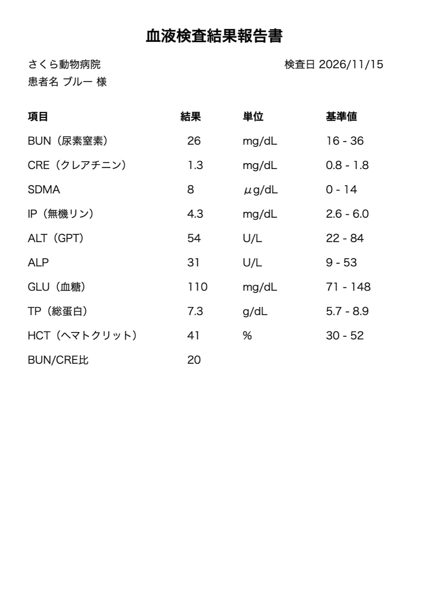

健診や通院でもらった猫の検査結果を、ずっと同じグラフで見られる記録アプリです。結果票を撮ると端末の中で数値を読み取り、確認してから保存できます。病院ごとの基準範囲も一緒に残せます。
本アプリは記録・グラフ化のためのツールです。判定は行いません。診断・治療は獣医師にご相談ください。
Q. データはどこに保存されますか？
A. すべてお使いの iPhone の中だけです。アカウント登録やサーバーはありません。アプリを削除すると記録も消えます。
Q. 写真の読み取りがうまくいきません。
A. 明るいところで、結果票の全体がまっすぐ入るように撮ってください。読み取れなかった項目は、確認画面の「項目を追加」から手で入力できます。小数点や単位の読みまちがいがないか、保存前に必ず見比べてください。
Q. 「入力した基準範囲より上」と出ました。病気ですか？
A. アプリは病気かどうかの判定をしません。結果票から入力した基準範囲と、数値の大小を表示しているだけです。気になるときは獣医師にご相談ください。
Q. 通院中モードとは？
A. 通院が始まったときに、飼い主さんが自分でオンにするモードです。お薬・皮下輸液・飲水量などのお世話の記録が使えるようになります。治ったら元気なときモードに戻せて、記録はそのまま残ります。
架空の猫・架空の病院の見本です。この画像をアプリの「結果票を読み取る」→「写真から選ぶ」で読み込むと、読み取りを試せます。

ご質問・ご要望・不具合のご報告は、メール knagata27@gmail.com までお送りください。